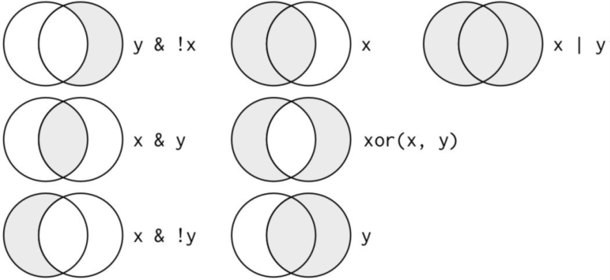

Data Transformation with dplyr
Often you’ll need to create some new variables or summaries, or maybe you just want to rename the variables or reorder the observations in order to make the data a little easier to work with.
# Needed libraries ----
library(nycflights13)
library(dplyr)
#or ----
library(tidyverse)

The conflict message tells you some of the other functions have been overwrited by Tidyverse. If you want to use the base version of these functions after loading dplyr, you’ll need to use their full names: stats::filter() and stats::lag(),etc.
search()
search()
## [1] ".GlobalEnv" "package:forcats" "package:stringr"
## [4] "package:dplyr" "package:purrr" "package:readr"
## [7] "package:tidyr" "package:tibble" "package:ggplot2"
## [10] "package:tidyverse" "package:nycflights13" "package:stats"
## [13] "package:graphics" "package:grDevices" "package:utils"
## [16] "package:datasets" "package:methods" "Autoloads"
## [19] "package:base"
You may use the full syntax package::function_name() to load the specific function, if there are any overwriting issues occured.
Package nycflights13
To explore the basic data manipulation verbs of dplyr, we’ll use nycflights13::flights. This data frame contains all 336,776 flights that departed from New York City in 2013:
head(flights)
## # A tibble: 6 × 19
## year month day dep_time sched_dep_time dep_delay arr_time sched_arr_time
## <int> <int> <int> <int> <int> <dbl> <int> <int>
## 1 2013 1 1 517 515 2 830 819
## 2 2013 1 1 533 529 4 850 830
## 3 2013 1 1 542 540 2 923 850
## 4 2013 1 1 544 545 -1 1004 1022
## 5 2013 1 1 554 600 -6 812 837
## 6 2013 1 1 554 558 -4 740 728
## # … with 11 more variables: arr_delay <dbl>, carrier <chr>, flight <int>,
## # tailnum <chr>, origin <chr>, dest <chr>, air_time <dbl>, distance <dbl>,
## # hour <dbl>, minute <dbl>, time_hour <dttm>
Interview data with view()
view(flights)
You might also have noticed the row of three- (or four-) letter abbreviations under the column names. These describe the type of each variable:
- int stands for integers.
- dbl stands for doubles, or real numbers.
- chr stands for character vectors, or strings.
- dttm stands for date-times (a date + a time).
Flights actually is a tibble, a special type of data.frame. We will talk about it later.
There are three other common types of variables that aren’t used in this dataset but you’ll encounter later.
- lgl stands for logical, vectors that contain only TRUE or FALSE.
- fctr stands for factors, which R uses to represent categorical variables with fixed possible values.
- date stands for dates.
dplyr
You are going to learn the five key dplyr functions that allow you to solve the vast majority of your data-manipulation challenges:
filter()pick observations by their values .arrange()Reorder the rows.select()Pick variables by their names.mutate()Create new variables with functions of existing variables.summarize()Collapse many values down to a single summary.group_by()Conjunction.
dplyr grammar
All verbs work similarly: filter(df, argument,...)
- The first argument is a data frame.
- The subsequent arguments describe what to do with the data frame, using the variable names (without quotes).
- The result is a new data frame.
filter()
Filter rows with filter()
filter() allows you to subset observations based on their values.
Base function in R:
flights[flights$month==1&flights$day==1,]
filter() function in dplyr:
filter(flights, month==1,day==1)
We only want to see the Jan.1st flights
jan <- filter(flights, month==1, day==1)
jan
## # A tibble: 842 × 19
## year month day dep_time sched_dep_time dep_delay arr_time sched_arr_time
## <int> <int> <int> <int> <int> <dbl> <int> <int>
## 1 2013 1 1 517 515 2 830 819
## 2 2013 1 1 533 529 4 850 830
## 3 2013 1 1 542 540 2 923 850
## 4 2013 1 1 544 545 -1 1004 1022
## 5 2013 1 1 554 600 -6 812 837
## 6 2013 1 1 554 558 -4 740 728
## 7 2013 1 1 555 600 -5 913 854
## 8 2013 1 1 557 600 -3 709 723
## 9 2013 1 1 557 600 -3 838 846
## 10 2013 1 1 558 600 -2 753 745
## # … with 832 more rows, and 11 more variables: arr_delay <dbl>, carrier <chr>,
## # flight <int>, tailnum <chr>, origin <chr>, dest <chr>, air_time <dbl>,
## # distance <dbl>, hour <dbl>, minute <dbl>, time_hour <dttm>
Filter rows with filter(): examples
dec25 <- filter(flights, month == 12, day == 25)
dec25
## # A tibble: 719 × 19
## year month day dep_time sched_dep_time dep_delay arr_time sched_arr_time
## <int> <int> <int> <int> <int> <dbl> <int> <int>
## 1 2013 12 25 456 500 -4 649 651
## 2 2013 12 25 524 515 9 805 814
## 3 2013 12 25 542 540 2 832 850
## 4 2013 12 25 546 550 -4 1022 1027
## 5 2013 12 25 556 600 -4 730 745
## 6 2013 12 25 557 600 -3 743 752
## 7 2013 12 25 557 600 -3 818 831
## 8 2013 12 25 559 600 -1 855 856
## 9 2013 12 25 559 600 -1 849 855
## 10 2013 12 25 600 600 0 850 846
## # … with 709 more rows, and 11 more variables: arr_delay <dbl>, carrier <chr>,
## # flight <int>, tailnum <chr>, origin <chr>, dest <chr>, air_time <dbl>,
## # distance <dbl>, hour <dbl>, minute <dbl>, time_hour <dttm>
filter() - comparison
To use filtering effectively, you have to know how to select the observations that you want using the comparison operators.
R provides the standard suite: >, >=, <, <=, != (not equal), and == (equal).
Flights on Feb~Dec, and before 28 th
filter(flights, month>1&!day>28)
Flights on Feb~Dec, and before 28 th
flights28 <- filter(flights, month>1&!day>28)
flights28
## # A tibble: 285,972 × 19
## year month day dep_time sched_dep_time dep_delay arr_time sched_arr_time
## <int> <int> <int> <int> <int> <dbl> <int> <int>
## 1 2013 10 1 447 500 -13 614 648
## 2 2013 10 1 522 517 5 735 757
## 3 2013 10 1 536 545 -9 809 855
## 4 2013 10 1 539 545 -6 801 827
## 5 2013 10 1 539 545 -6 917 933
## 6 2013 10 1 544 550 -6 912 932
## 7 2013 10 1 549 600 -11 653 716
## 8 2013 10 1 550 600 -10 648 700
## 9 2013 10 1 550 600 -10 649 659
## 10 2013 10 1 551 600 -9 727 730
## # … with 285,962 more rows, and 11 more variables: arr_delay <dbl>,
## # carrier <chr>, flight <int>, tailnum <chr>, origin <chr>, dest <chr>,
## # air_time <dbl>, distance <dbl>, hour <dbl>, minute <dbl>, time_hour <dttm>
Tips
When you’re starting out with R, the easiest mistake to make is to use
=instead of==when testing for equality. When this happens you’ll get an informative error:filter(flights, month = 1)## Error in `filter()`: ## ! We detected a named input. ## ℹ This usually means that you've used `=` instead of `==`. ## ℹ Did you mean `month == 1`?There’s another common problem you might encounter when using
==: floating-point numbers.sqrt(2)^2==2## [1] FALSE1/49*49==1## [1] FALSEComputers use finite precision arithmetic (they obviously can’t store an infinite number of digits!) so remember that every number you see is an approximation. Instead of relying on
==, use near():near(sqrt(2) ^ 2, 2)## [1] TRUEnear(1 / 49 * 49, 1)## [1] TRUE
Logical operators

nycflights13: Flights on May or June
mayJune <- filter(flights, month==5|month==6)
mayJune$month %>% unique()
## [1] 5 6
Tips: %in%
A useful shorthand for this problem is x %in% y. This will select every row where x is one of the values in y. We could use it to rewrite the preceding code: Retrieve the flights information on Jan, Feb, and Mar
filter(flights, month%in%c(1,2,3)) %>% head()
!= not equals to
Flights not on Feb
filter(flights, month!=2)
## # A tibble: 311,825 × 19
## year month day dep_time sched_dep_time dep_delay arr_time sched_arr_time
## <int> <int> <int> <int> <int> <dbl> <int> <int>
## 1 2013 1 1 517 515 2 830 819
## 2 2013 1 1 533 529 4 850 830
## 3 2013 1 1 542 540 2 923 850
## 4 2013 1 1 544 545 -1 1004 1022
## 5 2013 1 1 554 600 -6 812 837
## 6 2013 1 1 554 558 -4 740 728
## 7 2013 1 1 555 600 -5 913 854
## 8 2013 1 1 557 600 -3 709 723
## 9 2013 1 1 557 600 -3 838 846
## 10 2013 1 1 558 600 -2 753 745
## # … with 311,815 more rows, and 11 more variables: arr_delay <dbl>,
## # carrier <chr>, flight <int>, tailnum <chr>, origin <chr>, dest <chr>,
## # air_time <dbl>, distance <dbl>, hour <dbl>, minute <dbl>, time_hour <dttm>
|, &, and ","
Compare the following three code chunks
filter(flights, !(arr_delay > 120 | dep_delay > 120)) %>%
select(dep_delay) %>% head(3)
filter(flights, arr_delay <= 120, dep_delay <= 120) %>%
select(dep_delay) %>% head(3)
filter(flights, !arr_delay > 120 & !dep_delay > 120) %>%
select(dep_delay) %>% head(3)
## # A tibble: 3 × 1
## dep_delay
## <dbl>
## 1 2
## 2 4
## 3 2
Missing Values
One important feature of R that can make comparison tricky is missing values, or NAs (“not availables”).
NA>5
## [1] NA
NA==10
## [1] NA
NA+10
## [1] NA
NA/2
[1] NA
### NA==NA
The most confusing result is this one:
```r
NA==NA
## [1] NA
But we can understand it easily in one example:
# Let ZAge be Zhenyuan's age. We don't know how old he is.
ZAge <- NA
# Let TAge be one random Tub's age. We don't know how old they is. (Pretty sure we don't know a random Tub's age...)
TAge <- NA
# Are Zhenyuan and Tub the same age?
ZAge == TAge
## [1] NA
# We don't know!
NA with filter()
filter() only includes rows where the condition is TRUE;
it excludes both FALSE and NA values.
If you want to preserve missing values, ask for them explicitly:
df <- tibble(x = c(1, NA, 3))
filter(df, x > 1)
## # A tibble: 1 × 1
## x
## <dbl>
## 1 3
filter(df, is.na(x) | x > 1)
## # A tibble: 2 × 1
## x
## <dbl>
## 1 NA
## 2 3
Some other functions
is.na(NA)
## [1] TRUE
df <- data.frame(A=c(1,NA,2))
na.omit(df)
## A
## 1 1
## 3 2
sum(df[,1], na.rm=T)
## [1] 3
Exercise 1
Find all flights that:
Flew to Houston (IAH)
Were operated by United (UA), American (AA), or Delta (DL)
Departed in summer (July, August, and September)
Exercise 2
Use data set msleep, and create a new data frame of mammals with feeding type carnivore and brain weight less than the average of brain weight over all mammals. Make sure no NA values in column of brain weight.
arrange()
Arrange Rows with arrange()
arrange() works similarly to filter() except that instead of selecting rows, it changes their order
Base function in R:
flights[order(flights$year,flights$month, flights$day, decreasing=F),]
arrange() function in dplyr:
arrange(flights, year, month, day)
## # A tibble: 336,776 × 19
## year month day dep_time sched_dep_time dep_delay arr_time sched_arr_time
## <int> <int> <int> <int> <int> <dbl> <int> <int>
## 1 2013 1 1 517 515 2 830 819
## 2 2013 1 1 533 529 4 850 830
## 3 2013 1 1 542 540 2 923 850
## 4 2013 1 1 544 545 -1 1004 1022
## 5 2013 1 1 554 600 -6 812 837
## 6 2013 1 1 554 558 -4 740 728
## 7 2013 1 1 555 600 -5 913 854
## 8 2013 1 1 557 600 -3 709 723
## 9 2013 1 1 557 600 -3 838 846
## 10 2013 1 1 558 600 -2 753 745
## # … with 336,766 more rows, and 11 more variables: arr_delay <dbl>,
## # carrier <chr>, flight <int>, tailnum <chr>, origin <chr>, dest <chr>,
## # air_time <dbl>, distance <dbl>, hour <dbl>, minute <dbl>, time_hour <dttm>
Use desc() to reorder by a column in descending order
arrange(flights, desc(arr_delay))
## # A tibble: 336,776 × 19
## year month day dep_time sched_dep_time dep_delay arr_time sched_arr_time
## <int> <int> <int> <int> <int> <dbl> <int> <int>
## 1 2013 1 9 641 900 1301 1242 1530
## 2 2013 6 15 1432 1935 1137 1607 2120
## 3 2013 1 10 1121 1635 1126 1239 1810
## 4 2013 9 20 1139 1845 1014 1457 2210
## 5 2013 7 22 845 1600 1005 1044 1815
## 6 2013 4 10 1100 1900 960 1342 2211
## 7 2013 3 17 2321 810 911 135 1020
## 8 2013 7 22 2257 759 898 121 1026
## 9 2013 12 5 756 1700 896 1058 2020
## 10 2013 5 3 1133 2055 878 1250 2215
## # … with 336,766 more rows, and 11 more variables: arr_delay <dbl>,
## # carrier <chr>, flight <int>, tailnum <chr>, origin <chr>, dest <chr>,
## # air_time <dbl>, distance <dbl>, hour <dbl>, minute <dbl>, time_hour <dttm>
Missing values are always sorted at the end
df <- data.frame(x = c(5, 2, NA))
arrange(df, x) #or arrange(df, desc(x))
## x
## 1 2
## 2 5
## 3 NA
Exercises
- Sort flights to find the most delayed flights. Find the flights that left earliest.
- Sort flights to find the fastest flights.
select()
Select Columns with select()
select() allows you to rapidly zoom in on a useful subset using operations based on the names of the variables.
Base function in R:
# Select columns by name
flights[,c("year","month","day")]
select() function in dplyr:
# Select columns by name
select(flights, year, month, day)
## # A tibble: 336,776 × 3
## year month day
## <int> <int> <int>
## 1 2013 1 1
## 2 2013 1 1
## 3 2013 1 1
## 4 2013 1 1
## 5 2013 1 1
## 6 2013 1 1
## 7 2013 1 1
## 8 2013 1 1
## 9 2013 1 1
## 10 2013 1 1
## # … with 336,766 more rows
Select all colums between year and day
select(flights, year:day)
## # A tibble: 336,776 × 3
## year month day
## <int> <int> <int>
## 1 2013 1 1
## 2 2013 1 1
## 3 2013 1 1
## 4 2013 1 1
## 5 2013 1 1
## 6 2013 1 1
## 7 2013 1 1
## 8 2013 1 1
## 9 2013 1 1
## 10 2013 1 1
## # … with 336,766 more rows
Select all columns except those from year to day
select(flights, -(year:day))
## # A tibble: 336,776 × 16
## dep_time sched_dep_time dep_delay arr_time sched_arr_time arr_delay carrier
## <int> <int> <dbl> <int> <int> <dbl> <chr>
## 1 517 515 2 830 819 11 UA
## 2 533 529 4 850 830 20 UA
## 3 542 540 2 923 850 33 AA
## 4 544 545 -1 1004 1022 -18 B6
## 5 554 600 -6 812 837 -25 DL
## 6 554 558 -4 740 728 12 UA
## 7 555 600 -5 913 854 19 B6
## 8 557 600 -3 709 723 -14 EV
## 9 557 600 -3 838 846 -8 B6
## 10 558 600 -2 753 745 8 AA
## # … with 336,766 more rows, and 9 more variables: flight <int>, tailnum <chr>,
## # origin <chr>, dest <chr>, air_time <dbl>, distance <dbl>, hour <dbl>,
## # minute <dbl>, time_hour <dttm>
Other arguments within select()
There are a number of helper functions you can use within select():
starts_with("abc")matches names that begin with “abc”.ends_with("xyz")matches names that end with “xyz”.contains("ijk")matches names that contain “ijk”.matches("^a")selects variables that match a regular expression. (check R4DS "regular expressions")num_range("x", 1:3)matches x1, x2, and x3.
select(): examples
abc.df <- data.frame(apple=c("b", "c"), an.orange=1:2, orange1=2:3)
abc.df
## apple an.orange orange1
## 1 b 1 2
## 2 c 2 3
select(abc.df, starts_with("app"))
## apple
## 1 b
## 2 c
select(abc.df, ends_with("ge"))
## an.orange
## 1 1
## 2 2
select(abc.df, contains("pp"))
## apple
## 1 b
## 2 c
select(abc.df, matches("^a"))
## apple an.orange
## 1 b 1
## 2 c 2
select(abc.df, num_range("orange", 1))
## orange1
## 1 2
## 2 3
mutate()
Add New Variables with mutate()
References
[1] Hadley Wickham, Garrett Grolemund. R For Data Science. \